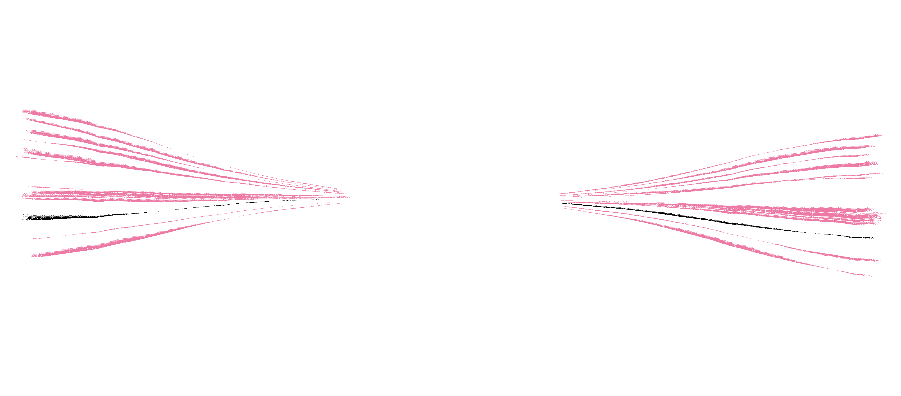

Scaling the Human Experience: An Engine to Fight Brute Force
LLMs learned to talk by reading everything we’ve ever written, but robots can’t do the same because we never recorded how we move. Solving embodiment is fundamentally the same as solving language; we just aren’t as lucky with the data we have.
There’s no corpus waiting to be scraped, and the physical world is notoriously unforgiving, so every humanoid company has to collect or manufacture its own data. Even the largest players fall back on training in simulation, synthetic data or paid data-collection operations. None of these scale.
A high-quality, embodied dataset the size of the internet does not exist, and no amount of money spent brute forcing data will create one.
The physical world needs its own internet—an enormous, passive stream of human physical data. The only way to build that is to create an embodied product people choose to use en masse.

A powered exoskeleton is the data engine to solve the embodiment problem.
Why the emphasis on powered? Power is what makes it useful to the wearer. Wireless motion capture (mocap) suits already exist and provide the data we want, but they don’t give anything to the user in return. Paying people to wear uncomfortable costumes for hours and do repetitive tasks can’t scale.
Nobody wrote the internet to train LLMs. They wrote it because it was useful to them, and the data was a side effect.
A powered exo should work the same way. It has to help the person wearing it, and never get in their way. Today’s exosuits are too bulky and awkward for daily use, and if a device is even mildly annoying, no one will wear it.
Suit 1 is built to be something people want to wear, not something they put up with. They use it because it helps them move better, and along the way, the dataset builds itself.